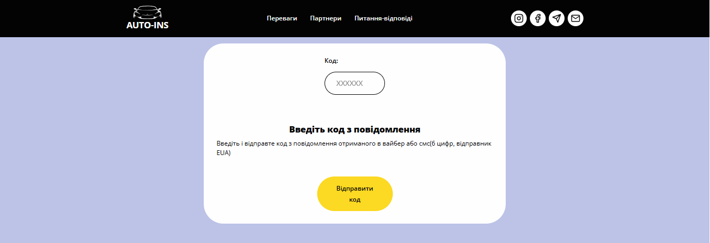

Навіщо вводити смс код підтвердження при оформленні страховки на авто

У сучасному цифровому світі швидкість, зручність та безпека є ключовими. Саме тому можливість підписання документів за допомогою електронного підпису через SMS-код стає незамінною, особливо коли потрібно оформити страховку на авто онлайн. Ми пропонуємо вам саме такий інноваційний спосіб, який поєднує простоту використання з високим рівнем надійності.
auto ins, автоинс, аутоинс, ауто инс, autoins, автоинс, авто инс, автоінс, авто інс, ауто інс,
Що таке OTP-підпис та як він працює?
Електронний підпис за допомогою одноразового SMS-коду (OTP - One-Time Password) – це прогресивний метод ідентифікації та підтвердження волі користувача при укладенні електронних договорів. Замість власноручного підпису на папері, ви підтверджуєте свою згоду унікальним кодом, що надсилається на ваш мобільний телефон.
Після заповнення всіх даних вам потрібно ввести код у відповідне поле, це буде ваш одноразовий підпис.
Залишиться лише сплатити договір зручним способом і ваша автоцивілка одразу прийде на електронну пошту.
Безпека електронного підпису через SMS: чи варто довіряти?
Питання безпеки завжди є пріоритетним, коли йдеться про фінансові операції та особисті дані. Електронний підпис через SMS-код є високонадійним з кількох причин:
-
Одноразовість та обмежений термін дії: Кожен OTP-код є унікальним і дійсним лише протягом короткого проміжку часу. Це мінімізує ризик його перехоплення або несанкціонованого використання.
-
Ідентифікація користувача: SMS-код надсилається виключно на ваш мобільний номер, який ви особисто вказали. Це гарантує, що підпис ставиться саме вами, власником номера телефону.
-
Юридична сила: В Україні такий тип електронного підпису має визнану юридичну силу, що робить укладені за його допомогою договори повністю легітимними.
-
Захист даних: Всі ваші персональні дані та інформація про страховий договір на AUTOINS захищені відповідно до чинного законодавства України про захист персональних даних.
-
Гарантована безпека: Кожен підписний код унікальний та прив'язаний до вашого конкретного договору, забезпечуючи високий рівень захисту ваших даних та транзакцій.